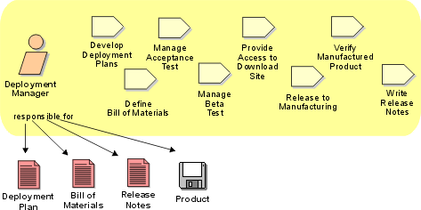

Role:
Deployment Manager
The deployment manager role plans the product's transition to the user
community and documents it in various associated documents.

Staffing
A deployment manager requires the following skills:
- Experience in deploying systems.
- Communication/Coordination in order to stay current with
the status of the product development and communicate the needs of the
deployment activities to the rest of the organization.
- Planning Ability in order to ensure that deployment can be
performed on schedule and with the available resources.
- Goal-orientation and Pro-activity in order to plan and
drive the product to completion across the various teams. The
Deployment Manager has to focus on getting a quality product out the
door. To be effective, the Deployment Manager and the Project Manager
must work closely together. Often these roles are realized by a single
person.
Copyright
© 1987 - 2001 Rational Software Corporation
|  Roles and Activities >
Roles and Activities >
 Deployment Manager
Deployment Manager